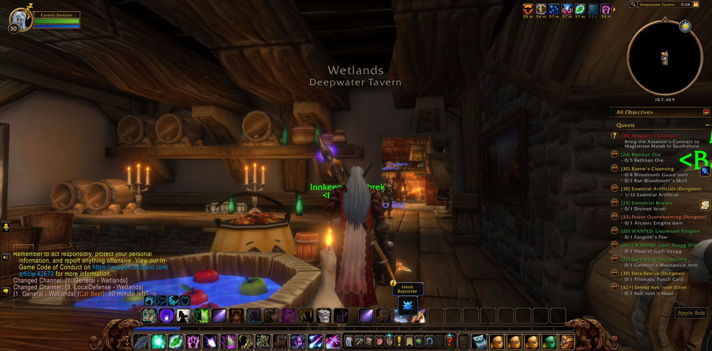
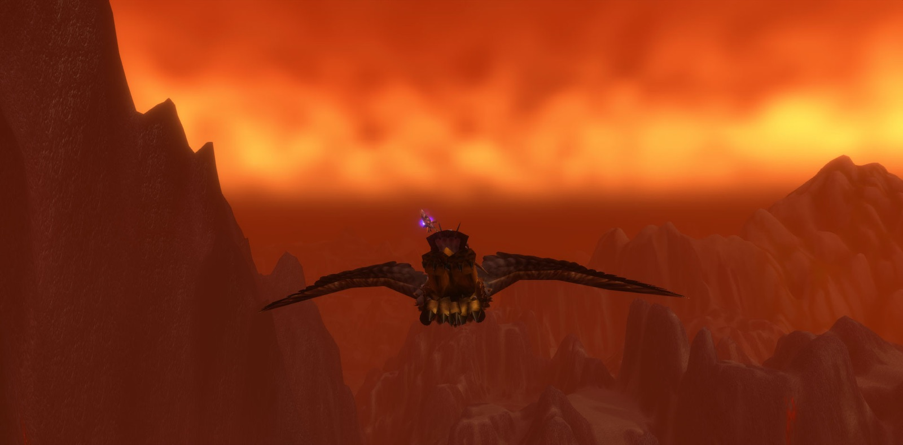
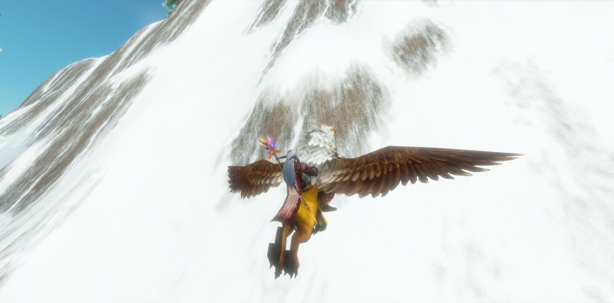
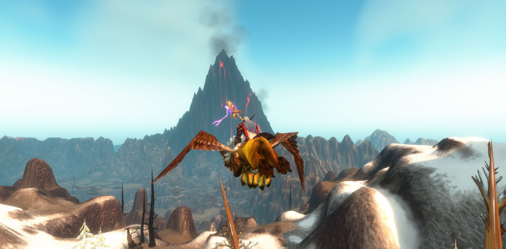
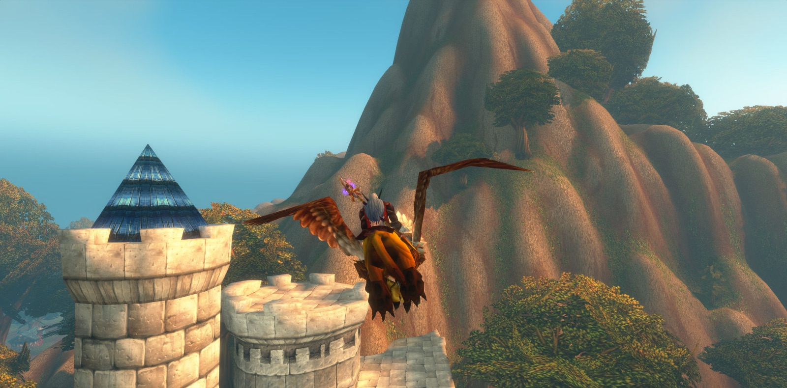
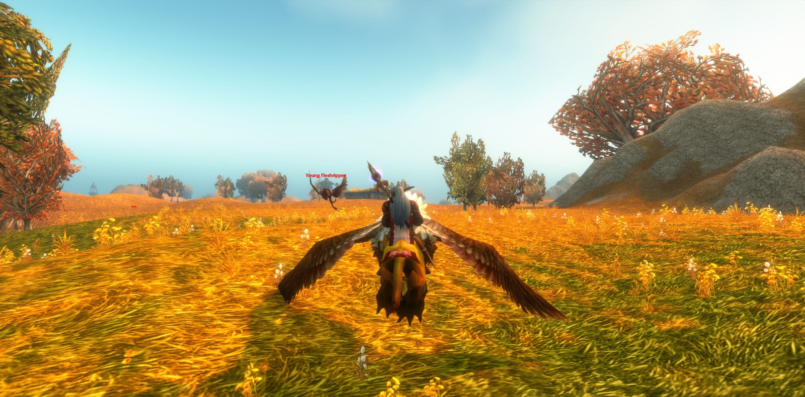
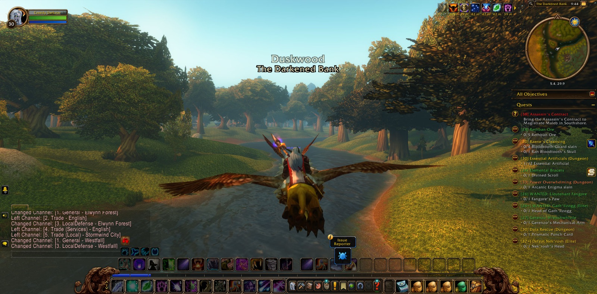
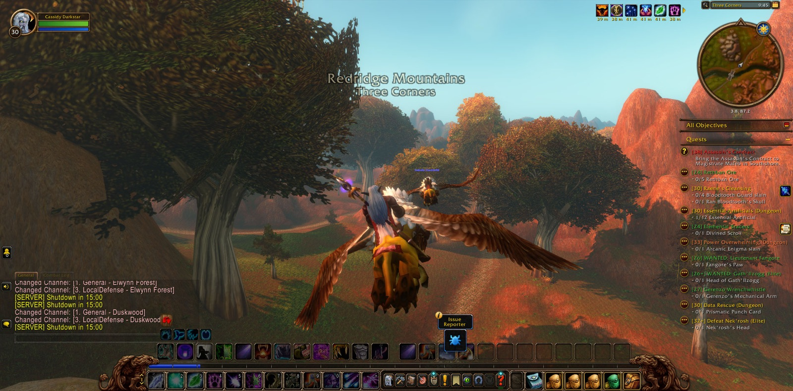

Cassidy Darkstar set out from Elwynn Forest, and the next that is told of him is that he stood within the Deepwater Tavern, in the Wetlands. There he took a picture of the moment, as a traveller will who wishes to remember where a road began. From the tavern he went out to Menethil Harbor, and from the harbor to Menethil Bay, and so he left the Wetlands behind him. No errand was taken up and no foe was met. It was a chapter of going, not of doing, and he seemed content that it should be so.

Northward and eastward the road bore him into Dun Morogh, the old country of the dwarves, and there too a picture was taken. He passed the Gates of Ironforge and did not go in. He went on by Steelgrill's Depot and through Kharanos, names that have long been spoken by those who keep the hearths of the mountain folk. Beyond them the land changed its temper. He came into the Searing Gorge, and he marked that crossing with a picture as well. He went by Firewatch Ridge and past the mouth of Blackchar Cave, and then he passed the Altar of Storms into the Burning Steppes, where another picture was kept. He passed Draco'dar and did not linger there, for his road turned south and west again.


So Cassidy came back into Elwynn Forest by way of Northshire Valley, where many a young adventurer first took up the road, and from there to the Valley of Heroes in Stormwind City, where he took another picture. He did not stay in the city. He went by Mirror Lake and Mirror Lake Orchard, and out at Forest's Edge into Westfall, and that border too he kept in a picture. In Westfall he passed Saldean's Farm and Sentinel Hill, the watch-post of that country, and then he turned east along the borders of the Wood. His way wound back and forth across the line where Duskwood meets Elwynn, through The Hushed Bank and many times along The Darkened Bank, and between them by The Stonefield Farm, the mouth of Fargodeep Mine, The Maclure Vineyards, Jerod's Landing and the Brackwell Pumpkin Patch. As he first came under the eaves of Duskwood he took a picture of that place.


At last he went out of Elwynn Forest at Three Corners and came into the Redridge Mountains. There he took the last of his eight pictures, and there the telling stops. No level was gained, no errand was finished, and no blow was struck. He travelled alone, and in that going he passed through two-and-thirty places, from a harbor tavern in the Wetlands to the foot of the red hills. Little was done, but much ground was crossed, and a druid who knows the lands of the Eastern Kingdoms by their names is the better ready for whatever deeds may come. The road ran on before him into Redridge, as roads do.

